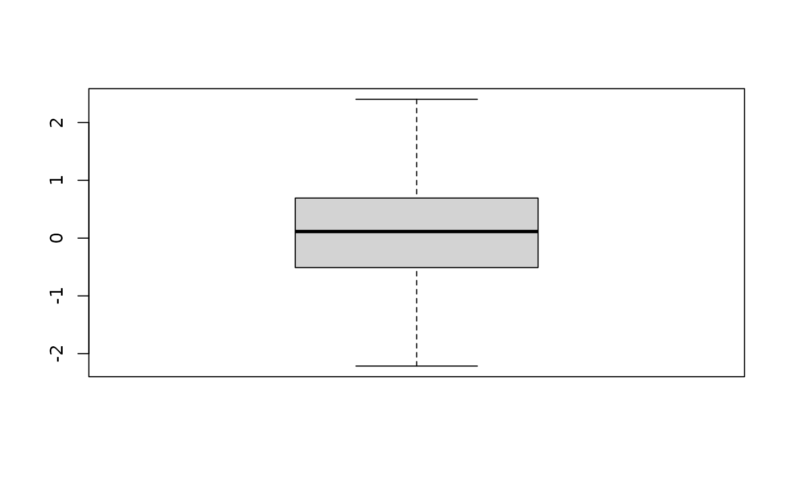

vignettes/qcmetrics.Rmd
qcmetrics.RmdAbstract
The qcmetrics package is a framework that provides
simple data containers for quality metrics and support for
automatic report generation. This document briefly illustrates the
core data structures and then demonstrates the generation and
automation of quality control reports for microarray and
proteomics data.
Quality control (QC) is an essential step in any analytical process. Data of poor quality can at best lead to the absence of positive results or, much worse, false positives that stem from uncaught faulty and noisy data and much wasted resources in pursuing red herrings.
Quality is often a relative concept that depends on the nature of the
biological sample, the experimental settings, the analytical process and
other factors. Research and development in the area of QC has generally
lead to two types of work being disseminated. Firstly, the comparison of
samples of variable quality and the identification of metrics that
correlate with the quality of the data. These quality metrics could
then, in later experiments, be used to assess their quality. Secondly,
the design of domain-specific software to facilitate the collection,
visualisation and interpretation of various QC metrics is also an area
that has seen much development. QC is a prime example where
standardisation and automation are of great benefit. While a great
variety of QC metrics, software and pipelines have been described for
any assay commonly used in modern biology, we present here a different
tool for QC, whose main features are flexibility and versatility. The
qcmetrics package is a general framework for QC that can
accommodate any type of data. It provides a flexible framework to
implement QC items that store relevant QC metrics with a specific
visualisation mechanism. These individual items can be bundled into
higher level QC containers that can be readily used to generate reports
in various formats. As a result, it becomes easy to develop complete
custom pipelines from scratch and automate the generation of reports.
The pipelines can be easily updated to accommodate new QC items of
better visualisation techniques.
Section @ref(sec:qcclasses) provides an overview of the framework. In
section @ref(sec:pipeline), we use proteomics data (subsection
@ref(sec:prot)) to demonstrate the elaboration of QC pipelines: how to
create individual QC objects, how to bundle them to create sets of QC
metrics and how to generate reports in multiple formats. We also show
how the above steps can be fully automated through simple wrapper
functions. Although kept simple in the interest of time and space, these
examples are meaningful and relevant. In section @ref(sec:report), we
provide more detail about the report generation process, how reports can
be customised and how new exports can be contributed. We proceed in
section @ref(sec:qcpkg) to the consolidation of QC pipelines using R and
elaborate on the development of dedicated QC packages with
qcmetrics.
The package provides two types of QC containers. The
QcMetric class stores data and visualisation functions for
single metrics. Several such metrics can be bundled into
QcMetrics instances, that can be used as input for
automated report generation. Below, we will provide a quick overview of
how to create respective QcMetric and
QcMetrics instances. More details are available in the
corresponding documentations.
QcMetric class
A QC metric is composed of a description (name in the
code chunk below), some QC data (qcdata) and a
status that defines if the metric is deemed of acceptable
quality (coded as TRUE), bad quality (coded as
FALSE) or not yet evaluated (coded as NA).
Individual metrics can be displayed as a short textual summary or
plotted. To do the former, one can use the default show
method.
library("qcmetrics")
qc <- QcMetric(name = "A test metric")
qcdata(qc, "x") <- rnorm(100)
qcdata(qc) ## all available qcdata## [1] "x"## Min. 1st Qu. Median Mean 3rd Qu. Max.
## -2.2147 -0.4942 0.1139 0.1089 0.6915 2.4016
show(qc) ## or just qc## Object of class "QcMetric"
## Name: A test metric
## Status: NA
## Data: x
status(qc) <- TRUE
qc## Object of class "QcMetric"
## Name: A test metric
## Status: TRUE
## Data: xPlotting QcMetric instances requires to implement a
plotting method that is relevant to the data at hand. We can use a
plot replacement method to define our custom function. The
code inside the plot uses qcdata to extract
the relevant QC data from object that is then passed as
argument to plot and uses the adequate visualisation to
present the QC data.
plot(qc)## Warning in x@plot(x, ...): No specific plot function defined
QcMetrics class
A QcMetrics object is essentially just a list of
individual instances. It is also possible to set a list of metadata
variables to describe the source of the QC metrics. The metadata can be
passed as an QcMetadata object (the way it is stored in the
QcMetrics instance) or directly as a named
list. The QcMetadata is itself a
list and can be accessed and set with metadata
or mdata. When accessed, it is returned and displayed as a
list.
## Object of class "QcMetrics"
## containing 1 QC metrics.
## and no metadata variables.## Object of class "QcMetrics"
## containing 1 QC metrics.
## and 2 metadata variables.
mdata(qcm)## $author
## [1] "Prof. Who"
##
## $lab
## [1] "Big lab"The metadata can be updated with the same interface. If new named items are passed, the metadata is updated by addition of the new elements. If a named item is already present, its value gets updated.
metadata(qcm) <- list(author = "Prof. Who",
lab = "Cabin lab",
University = "Universe-ity")
mdata(qcm)## $author
## [1] "Prof. Who"
##
## $lab
## [1] "Cabin lab"
##
## $University
## [1] "Universe-ity"The QcMetrics can then be passed to the
qcReport method to generate reports, as described in more
details below.
The Microarray degradation section has been removed since the packages it was depending on have been deprecated.
To illustrate a simple QC analysis for proteomics data, we will
download data set PXD00001 from the ProteomeXchange
repository in the mzXML format (Pedrioli et al.
2004). The MS2 spectra from that mass-spectrometry run are then
read into Rand stored as an MSnExp experiment using the
readMSData function from the MSnbase package
(Gatto and Lilley 2012).
library("RforProteomics")
msfile <- getPXD000001mzXML()
library("MSnbase")
exp <- readMSData(msfile, verbose = FALSE)In the interest of time, this code chunk has been pre-computed and a
subset (1 in 3) of the exp instance is distributed with the
package. The data is loaded with
load(system.file("extdata/exp.rda", package = "qcmetrics"))The QcMetrics will consist of 3 items, namely a
chromatogram constructed with the MS2 spectra precursor’s intensities, a
figure illustrating the precursor charges in the MS space and an m/z
delta plot illustrating the suitability of MS2 spectra for
identification (see ?plotMzDelta or (Foster et al. 2011)).
qc1 <- QcMetric(name = "Chromatogram")
x <- rtime(exp)
y <- precursorIntensity(exp)
o <- order(x)
qcdata(qc1, "x") <- x[o]
qcdata(qc1, "y") <- y[o]
plot(qc1) <- function(object, ...)
plot(qcdata(object, "x"),
qcdata(object, "y"),
col = "darkgrey", type ="l",
xlab = "retention time",
ylab = "precursor intensity")
qc2 <- QcMetric(name = "MS space")
qcdata(qc2, "p2d") <- plot2d(exp, z = "charge", plot = FALSE)
plot(qc2) <- function(object) {
require("ggplot2")
print(qcdata(object, "p2d"))
}
qc3 <- QcMetric(name = "m/z delta plot")
qcdata(qc3, "pmz") <- plotMzDelta(exp, plot = FALSE,
verbose = FALSE)
plot(qc3) <- function(object)
suppressWarnings(print(qcdata(object, "pmz")))Note that we do not store the raw data in any of the above instances,
but always pre-compute the necessary data or plots that are then stored
as qcdata. If the raw data was to be needed in multiple
QcMetric instances, we could re-use the same
qcdata environment to avoid unnecessary copies
using qcdata(qc2) <- qcenv(qc1) and implement different
views through custom plot methods.
Let’s now combine the three items into a QcMetrics
object, decorate it with custom metadata using the MIAPE information
from the MSnExp object and generate a report.
protqcm <- QcMetrics(qcdata = list(qc1, qc2, qc3))
metadata(protqcm) <- list(
data = "PXD000001",
instrument = experimentData(exp)@instrumentModel,
source = experimentData(exp)@ionSource,
analyser = experimentData(exp)@analyser,
detector = experimentData(exp)@detectorType,
manufacurer = experimentData(exp)@instrumentManufacturer)The status column of the summary table is empty as we have not set the QC items statuses yet.
qcReport(protqcm, reportname = "protqc")Proteomics QC report
The complete pdf report is available with:
browseURL(example_reports("protqc"))In this section, we describe a set of N15 metabolic labelling QC
metrics (Krijgsveld et al. 2003). The data
is a phospho-enriched N15 labelled Arabidopsis thaliana sample
prepared as described in (Groen et al.
2013). The data was processed with in-house tools and is
available as an MSnSet instance. Briefly, MS2 spectra were
search with the Mascot engine and identification scores adjusted with
Mascot Percolator. Heavy and light pairs were then searched in the
survey scans and N15 incorporation was estimated based on the peptide
sequence and the isotopic envelope of the heavy member of the pair (the
inc feature variable). Heavy and light peptides isotopic
envelope areas were finally integrated to obtain unlabelled and N15
quantitation data. The psm object provides such data for
PSMs (peptide spectrum matches) with a posterior error probability <
0.05 that can be uniquely matched to proteins.
We first load the MSnbase package (required to support
the MSnSet data structure) and example data that is
distributed with the qcmetrics package. We will make use of
the ggplot2 plotting package.
## MSnSet (storageMode: lockedEnvironment)
## assayData: 1772 features, 2 samples
## element names: exprs
## protocolData: none
## phenoData: none
## featureData
## featureNames: 3 5 ... 4499 (1772 total)
## fvarLabels: Protein_Accession Protein_Description ... inc (21 total)
## fvarMetadata: labelDescription
## experimentData: use 'experimentData(object)'
## pubMedIds: 23681576
## Annotation:
## - - - Processing information - - -
## Subset [22540,2][1999,2] Tue Sep 17 01:34:09 2013
## Removed features with more than 0 NAs: Tue Sep 17 01:34:09 2013
## Dropped featureData's levels Tue Sep 17 01:34:09 2013
## MSnbase version: 1.9.7The first QC item examines the N15 incorporation rate, available in
the inc feature variable. We also defined a median
incorporation rate threshold tr equal to 97.5 that is used
to set the QC status.
## incorporation rate QC metric
qcinc <- QcMetric(name = "15N incorporation rate")
qcdata(qcinc, "inc") <- fData(psm)$inc
qcdata(qcinc, "tr") <- 97.5
status(qcinc) <- median(qcdata(qcinc, "inc")) > qcdata(qcinc, "tr")Next, we implement a custom show method, that prints 5
summary values of the variable’s distribution.
show(qcinc) <- function(object) {
qcshow(object, qcdata = FALSE)
cat(" QC threshold:", qcdata(object, "tr"), "\n")
cat(" Incorporation rate\n")
print(summary(qcdata(object, "inc")))
invisible(NULL)
}We then define the metric’s plot function that represent
the distribution of the PSM’s incorporation rates as a boxplot, shows
all the individual rates as jittered dots and represents the
tr threshold as a dotted red line.
plot(qcinc) <- function(object) {
inc <- qcdata(object, "inc")
tr <- qcdata(object, "tr")
lab <- "Incorporation rate"
dd <- data.frame(inc = qcdata(qcinc, "inc"))
p <- ggplot(dd, aes(factor(""), inc)) +
geom_jitter(colour = "#4582B370", size = 3) +
geom_boxplot(fill = "#FFFFFFD0", colour = "#000000",
outlier.size = 0) +
geom_hline(yintercept = tr, colour = "red",
linetype = "dotted", size = 1) +
labs(x = "", y = "Incorporation rate")
p
}N15 experiments of good quality are characterised by high incorporation rates, which allow to deconvolute the heavy and light peptide isotopic envelopes and accurate quantification.
The second metric inspects the log2 fold-changes of the PSMs, unique
peptides with modifications, unique peptide sequences (not taking
modifications into account) and proteins. These respective data sets are
computed with the combineFeatures function (see
?combineFeatures for details).
fData(psm)$modseq <- ## pep seq + PTM
paste(fData(psm)$Peptide_Sequence,
fData(psm)$Variable_Modifications, sep = "+")
pep <- combineFeatures(psm,
as.character(fData(psm)$Peptide_Sequence),
"median", verbose = FALSE)
modpep <- combineFeatures(psm,
fData(psm)$modseq,
"median", verbose = FALSE)
prot <- combineFeatures(psm,
as.character(fData(psm)$Protein_Accession),
"median", verbose = FALSE)The log2 fold-changes for all the features are then computed and
stored as QC data of our next QC item. We also store a pair of values
explfc that defined an interval in which we expect our
median PSM log2 fold-change to be.
## calculate log fold-change
qclfc <- QcMetric(name = "Log2 fold-changes")
qcdata(qclfc, "lfc.psm") <-
log2(exprs(psm)[,"unlabelled"] / exprs(psm)[, "N15"])
qcdata(qclfc, "lfc.pep") <-
log2(exprs(pep)[,"unlabelled"] / exprs(pep)[, "N15"])
qcdata(qclfc, "lfc.modpep") <-
log2(exprs(modpep)[,"unlabelled"] / exprs(modpep)[, "N15"])
qcdata(qclfc, "lfc.prot") <-
log2(exprs(prot)[,"unlabelled"] / exprs(prot)[, "N15"])
qcdata(qclfc, "explfc") <- c(-0.5, 0.5)
status(qclfc) <-
median(qcdata(qclfc, "lfc.psm")) > qcdata(qclfc, "explfc")[1] &
median(qcdata(qclfc, "lfc.psm")) < qcdata(qclfc, "explfc")[2]As previously, we provide a custom show method that
displays summary values for the four fold-changes. The plot
function illustrates the respective log2 fold-change densities and the
expected median PSM fold-change range (red rectangle). The expected 0
log2 fold-change is shown as a dotted black vertical line and the
observed median PSM value is shown as a blue dashed line.
show(qclfc) <- function(object) {
qcshow(object, qcdata = FALSE) ## default
cat(" QC thresholds:", qcdata(object, "explfc"), "\n")
cat(" * PSM log2 fold-changes\n")
print(summary(qcdata(object, "lfc.psm")))
cat(" * Modified peptide log2 fold-changes\n")
print(summary(qcdata(object, "lfc.modpep")))
cat(" * Peptide log2 fold-changes\n")
print(summary(qcdata(object, "lfc.pep")))
cat(" * Protein log2 fold-changes\n")
print(summary(qcdata(object, "lfc.prot")))
invisible(NULL)
}
plot(qclfc) <- function(object) {
x <- qcdata(object, "explfc")
plot(density(qcdata(object, "lfc.psm")),
main = "", sub = "", col = "red",
ylab = "", lwd = 2,
xlab = expression(log[2]~fold-change))
lines(density(qcdata(object, "lfc.modpep")),
col = "steelblue", lwd = 2)
lines(density(qcdata(object, "lfc.pep")),
col = "blue", lwd = 2)
lines(density(qcdata(object, "lfc.prot")),
col = "orange")
abline(h = 0, col = "grey")
abline(v = 0, lty = "dotted")
rect(x[1], -1, x[2], 1, col = "#EE000030",
border = NA)
abline(v = median(qcdata(object, "lfc.psm")),
lty = "dashed", col = "blue")
legend("topright",
c("PSM", "Peptides", "Modified peptides", "Proteins"),
col = c("red", "steelblue", "blue", "orange"), lwd = 2,
bty = "n")
}A good quality experiment is expected to have a tight distribution centred around 0. Major deviations would indicate incomplete incorporation, errors in the respective amounts of light and heavy material used, and a wide distribution would reflect large variability in the data.
Our last QC item inspects the number of features that have been
identified in the experiment. We also investigate how many peptides
(with or without considering the modification) have been observed at the
PSM level and the number of unique peptides per protein. Here, we do not
specify any expected values as the number of observed features is
experiment specific; the QC status is left as NA.
## number of features
qcnb <- QcMetric(name = "Number of features")
qcdata(qcnb, "count") <- c(
PSM = nrow(psm),
ModPep = nrow(modpep),
Pep = nrow(pep),
Prot = nrow(prot))
qcdata(qcnb, "peptab") <-
table(fData(psm)$Peptide_Sequence)
qcdata(qcnb, "modpeptab") <-
table(fData(psm)$modseq)
qcdata(qcnb, "upep.per.prot") <-
fData(psm)$Number_Of_Unique_PeptidesThe counts are displayed by the new show and plotted as
bar charts by the plot methods.
show(qcnb) <- function(object) {
qcshow(object, qcdata = FALSE)
print(qcdata(object, "count"))
}
plot(qcnb) <- function(object) {
par(mar = c(5, 4, 2, 1))
layout(matrix(c(1, 2, 1, 3, 1, 4), ncol = 3))
barplot(qcdata(object, "count"), horiz = TRUE, las = 2)
barplot(table(qcdata(object, "modpeptab")),
xlab = "Modified peptides")
barplot(table(qcdata(object, "peptab")),
xlab = "Peptides")
barplot(table(qcdata(object, "upep.per.prot")),
xlab = "Unique peptides per protein ")
}In the code chunk below, we combine the 3 QC items into a
QcMetrics instance and generate a report using meta data
extracted from the psm MSnSet instance.
qcReport(n15qcm, reportname = "n15qcreport",
title = expinfo(experimentData(psm))["title"],
author = expinfo(experimentData(psm))["contact"],
clean = FALSE)Once an appropriate set of quality metrics has been identified, the
generation of the QcMetrics instances can be wrapped up for
automation.
We provide such a wrapper function for this examples: the
n15qc function fully automates the above pipeline. The
names of the feature variable columns and the thresholds for the two
first QC items are provided as arguments. In case no report name is
given, a custom title with date and time is used, to avoid overwriting
existing reports.
N15 QC report
The complete pdf report is available with
browseURL(example_reports("n15qc"))The report generation is handled by dedicated packages, in particular
knitr (Xie 2013) and
markdown (Allaire et al.
2013).
The generation of the sections for QcMetric instances is
controlled by a function passed to the qcto argument. This
function takes care of transforming an instance of class
QcMetric into a character that can be inserted into the
report. For the tex and pdf reports, Qc2Tex is used; the
Rmd and html reports make use of Qc2Rmd. These functions take an
instance of class QcMetrics and the index of the
QcMetric to be converted.
qcmetrics:::Qc2Tex## function (object, i)
## {
## c(paste0("\\section{", name(object[[i]]), "}"), paste0("<<",
## name(object[[i]]), ", echo=FALSE>>="), paste0("show(object[[",
## i, "]])"), "@\n", "\\begin{figure}[!hbt]", "<<dev='pdf', echo=FALSE, fig.width=5, fig.height=5, fig.align='center'>>=",
## paste0("plot(object[[", i, "]])"), "@", "\\end{figure}",
## "\\clearpage")
## }
## <bytecode: 0x55ad1e12baf0>
## <environment: namespace:qcmetrics>
qcmetrics:::Qc2Tex(n15qcm, 1)## [1] "\\section{15N incorporation rate}"
## [2] "<<15N incorporation rate, echo=FALSE>>="
## [3] "show(object[[1]])"
## [4] "@\n"
## [5] "\\begin{figure}[!hbt]"
## [6] "<<dev='pdf', echo=FALSE, fig.width=5, fig.height=5, fig.align='center'>>="
## [7] "plot(object[[1]])"
## [8] "@"
## [9] "\\end{figure}"
## [10] "\\clearpage"Let’s investigate how to customise these sections depending on the
QcMetric status, the goal being to highlight positive QC
results (i.e. when the status is TRUE) with green circles
(or smileys), negative results with red cirlces (or frownies) and use en
empty black circle if status is NA after the section title
(the respective symbols are from the LaTeX package
wasysym).
Qc2Tex2To use this specific sectioning code, we pass our new function as
qcto when generating the report. To generate smiley labels,
use Qc2Tex3.
qcReport(n15qcm, reportname = "report", qcto = Qc2Tex2)
qcReport(n15qcm, reportname = "report", qcto = Qc2Tex3) ## for smiley/frowneyCustomised QC report
The complete pdf report is available with:
browseURL(example_reports("custom"))A reporting function is a function that
Converts the appropriate QC item sections (for example the
Qc2Tex2 function described above).
Optionally includes the QC item sections into addition header and
footer, either by writing these directly or by inserting the sections
into an appropriate template. The reporting functions that are available
in qcmetrics can be found in ?qcReport:
reporting_tex for type tex, reporting\_pdf for
type pdf, … These functions should use the same arguments
as qcReport insofar as possible.
Once written to a report source file, the final report type is
generated. knit is used to convert the Rnw source to tex
which is compiled into pdf using tools::texi2pdf. The Rmd
content is directly written into a file which is knitted and converted
to html using knit2html (which call
markdownTOHTML).
New reporting_abc functions can be called directly or
passed to qcReport using the reporter
argument.
While the examples presented in section @ref(sec:pipeline) are flexible and fast ways to design QC pipeline prototypes, a more robust mechanism is desirable for production pipelines. The R packaging mechanism is ideally suited for this as it provides versioning, documentation, unit testing and easy distribution and installation facilities.
While the detailed description of package development is out of the scope of this document, it is of interest to provide an overview of the development of a QC package. Taking the wrapper function, it could be used the create the package structure
package.skeleton("N15QC", list = "n15qc")The DESCRIPTION file would need to be updated. The
packages qcmetrics, and MSnbas would need to
be specified as dependencies in the Imports: line and
imported in the NAMESPACE file. The documentation file
N15QC/man/n15qc.Rd and the (optional) would need to be
updated. q
R and Bioconductor are well suited for the analysis of high throughput biology data. They provide first class statistical routines, excellent graph capabilities and an interface of choice to import and manipulate various omics data, as demonstrated by the wealth of packages that provide functionalities for QC.
The qcmetrics package is different than existing R
packages and QC systems in general. It proposes a unique
domain-independent framework to design QC pipelines and is thus suited
for any use case. The examples presented in this document illustrated
the application of qcmetrics on data containing single or
multiple samples or experimental runs from different technologies. It is
also possible to automate the generation of QC metrics for a set of
repeated (and growing) analyses of standard samples to establish lab
memory types of QC reports, that track a set of metrics for
controlled standard samples over time. It can be applied to raw data or
processed data and tailored to suite precise needs. The popularisation
of integrative approaches that combine multiple types of data in novel
ways stresses out the need for flexible QC development.
qcmetrics is a versatile software that allows rapid and
easy QC pipeline prototyping and development and supports
straightforward migration to production level systems through its well
defined packaging mechanism.
Acknowledgements: Many thanks to Arnoud Groen for providing the N15 data and Andrzej Oles for helpful comments and suggestions about the package and this document.
All software and respective versions used to produce this document are listed below.
## R Under development (unstable) (2024-01-31 r85845)
## Platform: x86_64-pc-linux-gnu
## Running under: Ubuntu 22.04.3 LTS
##
## Matrix products: default
## BLAS: /usr/lib/x86_64-linux-gnu/openblas-pthread/libblas.so.3
## LAPACK: /usr/lib/x86_64-linux-gnu/openblas-pthread/libopenblasp-r0.3.20.so; LAPACK version 3.10.0
##
## locale:
## [1] LC_CTYPE=en_US.UTF-8 LC_NUMERIC=C
## [3] LC_TIME=en_US.UTF-8 LC_COLLATE=en_US.UTF-8
## [5] LC_MONETARY=en_US.UTF-8 LC_MESSAGES=en_US.UTF-8
## [7] LC_PAPER=en_US.UTF-8 LC_NAME=C
## [9] LC_ADDRESS=C LC_TELEPHONE=C
## [11] LC_MEASUREMENT=en_US.UTF-8 LC_IDENTIFICATION=C
##
## time zone: UTC
## tzcode source: system (glibc)
##
## attached base packages:
## [1] stats4 stats graphics grDevices utils datasets methods
## [8] base
##
## other attached packages:
## [1] ggplot2_3.4.4 MSnbase_2.29.3 ProtGenerics_1.35.2
## [4] S4Vectors_0.41.3 Biobase_2.63.0 BiocGenerics_0.49.1
## [7] mzR_2.37.0 Rcpp_1.0.12 qcmetrics_1.41.1
## [10] BiocStyle_2.31.0
##
## loaded via a namespace (and not attached):
## [1] bitops_1.0-7 rlang_1.1.3
## [3] magrittr_2.0.3 clue_0.3-65
## [5] matrixStats_1.2.0 compiler_4.4.0
## [7] systemfonts_1.0.5 vctrs_0.6.5
## [9] stringr_1.5.1 pkgconfig_2.0.3
## [11] crayon_1.5.2 fastmap_1.1.1
## [13] XVector_0.43.1 pander_0.6.5
## [15] utf8_1.2.4 rmarkdown_2.25
## [17] preprocessCore_1.65.0 ragg_1.2.7
## [19] purrr_1.0.2 xfun_0.41
## [21] MultiAssayExperiment_1.29.0 zlibbioc_1.49.0
## [23] cachem_1.0.8 GenomeInfoDb_1.39.5
## [25] jsonlite_1.8.8 highr_0.10
## [27] DelayedArray_0.29.1 BiocParallel_1.37.0
## [29] parallel_4.4.0 cluster_2.1.6
## [31] R6_2.5.1 bslib_0.6.1
## [33] stringi_1.8.3 limma_3.59.1
## [35] GenomicRanges_1.55.2 jquerylib_0.1.4
## [37] iterators_1.0.14 bookdown_0.37
## [39] SummarizedExperiment_1.33.3 knitr_1.45
## [41] IRanges_2.37.1 Matrix_1.6-5
## [43] igraph_2.0.1.1 tidyselect_1.2.0
## [45] abind_1.4-5 yaml_2.3.8
## [47] doParallel_1.0.17 codetools_0.2-19
## [49] affy_1.81.0 lattice_0.22-5
## [51] tibble_3.2.1 plyr_1.8.9
## [53] withr_3.0.0 evaluate_0.23
## [55] desc_1.4.3 pillar_1.9.0
## [57] affyio_1.73.0 BiocManager_1.30.22
## [59] MatrixGenerics_1.15.0 foreach_1.5.2
## [61] MALDIquant_1.22.2 ncdf4_1.22
## [63] generics_0.1.3 RCurl_1.98-1.14
## [65] munsell_0.5.0 scales_1.3.0
## [67] xtable_1.8-4 glue_1.7.0
## [69] lazyeval_0.2.2 tools_4.4.0
## [71] mzID_1.41.0 QFeatures_1.13.2
## [73] vsn_3.71.0 fs_1.6.3
## [75] XML_3.99-0.16.1 grid_4.4.0
## [77] impute_1.77.0 MsCoreUtils_1.15.3
## [79] colorspace_2.1-0 GenomeInfoDbData_1.2.11
## [81] PSMatch_1.7.1 cli_3.6.2
## [83] textshaping_0.3.7 fansi_1.0.6
## [85] S4Arrays_1.3.3 dplyr_1.1.4
## [87] AnnotationFilter_1.27.0 pcaMethods_1.95.0
## [89] gtable_0.3.4 sass_0.4.8
## [91] digest_0.6.34 SparseArray_1.3.3
## [93] memoise_2.0.1 htmltools_0.5.7
## [95] pkgdown_2.0.7.9000 lifecycle_1.0.4
## [97] statmod_1.5.0 MASS_7.3-60.2